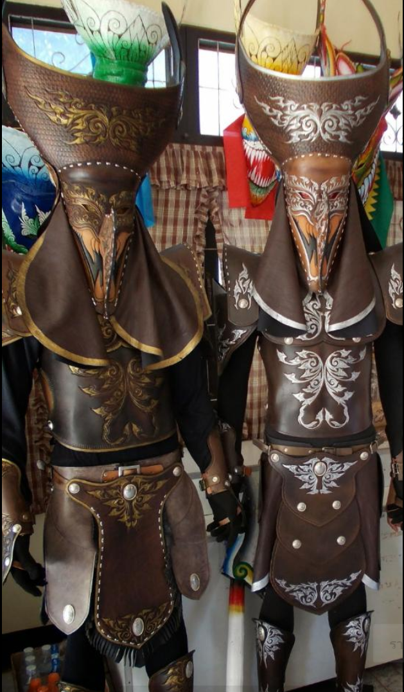

เชียงคาน เมืองเล็ก ริมแม่น้ำโขงสุดชายแดนไทย เป็นอำเภอหนึ่งในจังหวัดเลย ที่คงยังคงไว้ซึ่งวัฒนธรรม ขนบประเพณี การใช้ชีวิตแบบเรียบง่าย ภาพบ้านเก่าๆที่เรียงรายติดกันอยู่ริมถนนชายโขง ดึงดูดใจ ให้นักท่องเที่ยวหลายต่อหลายรุ่นต่าง หลั่งไหลเดินทางกันมาที่นี่ รวมถึงมีสถานที่ท่องเที่ยวน่าสนใจ ความสงบเรียบง่าย และรอยยิ้มของผู้คน ยังคงเป็นเสน่ห์ของเมืองนี้
ประเพณีแห่ผีตาโขนThe Phi Ta Khon (Ghost Festival)
เป็นเทศกาลที่มักจัดมากกว่าสามวันในบางช่วงระหว่างเดือนมีนาคมและกรกฎาคม โดยจัดขึ้นในวันที่ได้รับเลือกให้จัดขึ้นในแต่ละปีโดยคนทรงประจำเมือง ที่วัดโพนชัย และที่ว่าการอำเภอ ซึ่งงานบุญประเพณีพื้นบ้านนี้มีชื่อเรียกว่า บุญหลวง โดยแบ่งออกเป็นเทศกาล ผีตาโขน, ประเพณีบุญบั้งไฟ และงานบุญหลวง(บุญผะเหวด) ผีตาโขน เดิมมีชื่อเรียกว่า ผีตามคน เป็นเทศกาลที่ได้รับอิทธิพลมาจากมหาเวสสันดรชาดก ที่ว่าบรรดาสัตว์ป่ารวมถึงภูติผีที่อาศัยอยู่ในป่านั้นได้ออกมาส่งเสด็จด้วยอาลัย ซึ่งวันแรกจะเป็นเทศกาลผีตาโขน ซึ่งเรียกวันนี้ว่า วันรวม(วันโฮม) โดยจะมีพิธีเบิก พระอุปคุตต์ ในบริเวณระหว่างลำน้ำหมันกับลำน้ำศอก มีขบวนพาเหรดที่เต็มไปด้วยสีสันในตอนเช้า และในตอนบ่ายดูจัดแสดงขึ้นจากสมาชิกอาเซียนอื่น ๆ ได้ ในช่วงเย็นมีดนตรีเล่นสดบนเวทีหลัก และมีการเต้นรำและเพลงดั้งเดิมบนศูนย์อาหารเวที ส่วนวันที่สองของเทศกาลดังกล่าวจะมีพิธีจุดบั้งไฟบูชา พร้อมด้วยเครื่องแต่งกายที่หลากหลาย รวมถึงการแข่งขันเต้นรำตลอดจนขบวนพาเหรด ส่วนในวันที่สาม และวันสุดท้ายจะมีการให้ชาวบ้านฟังเทศน์ และประเพณียังคงมีความเชื่อกันว่า สำหรับคนที่เล่นหรือมีการแต่งตัวเป็นผีตาโขนใหญ่ ต้องถอดเครื่องแต่งกายผีตาโขนใหญ่ออกให้หมดและนำไปทิ้งในแม่น้ำหมัน ห้ามนำเข้าบ้าน เป็นการทิ้งความทุกข์ยากและสิ่งเลวร้ายไป และรอจนถึงปีหน้าจึงค่อยทำเล่นกันใหม่
ช่วงเวลาท่องเที่ยวที่เหมาะสมงานประเพณีจัดในช่วง เดือนมิถุนายน-กรกฎาคม